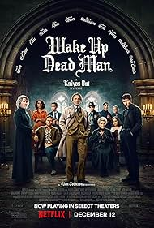

¿Qué día y a qué hora miro más Netflix?
Fuente: Flourish
Fuente: RAWGraphs
Fuente: Flourish
🥇 = mi favorita más allá de los datos: aunque Stranger Things sumó más minutos, "Something Very Bad Is Going to Happen" fue la que más disfruté de la temporada 2025-2026.
Fuente: DataWrapper



Empate a 98 pts en Rochis_Tomatoes entre las dos películas de la saga Knives Out.

Fuente: Tableau Public